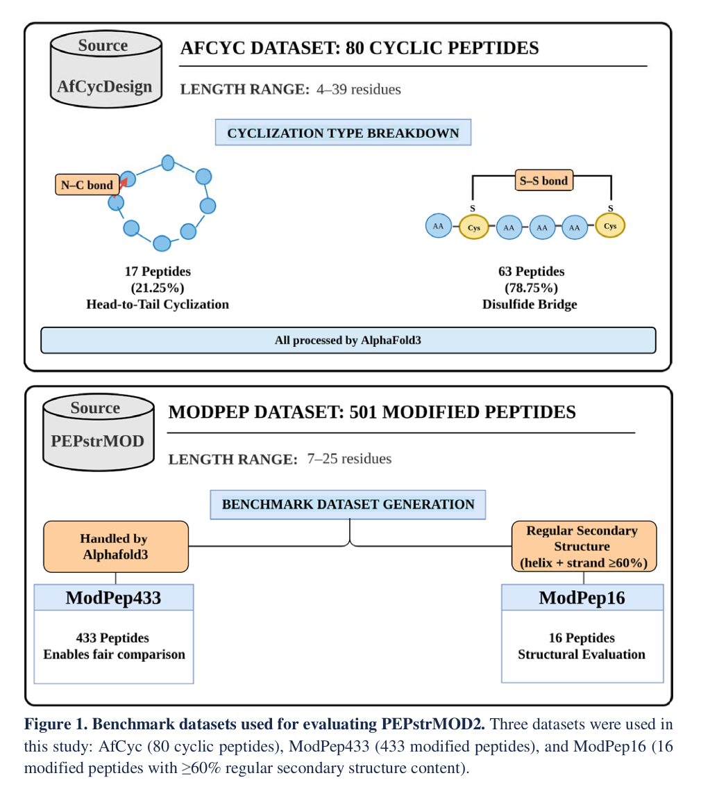
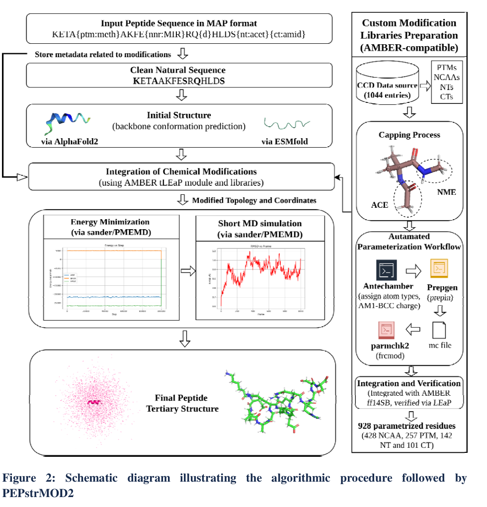
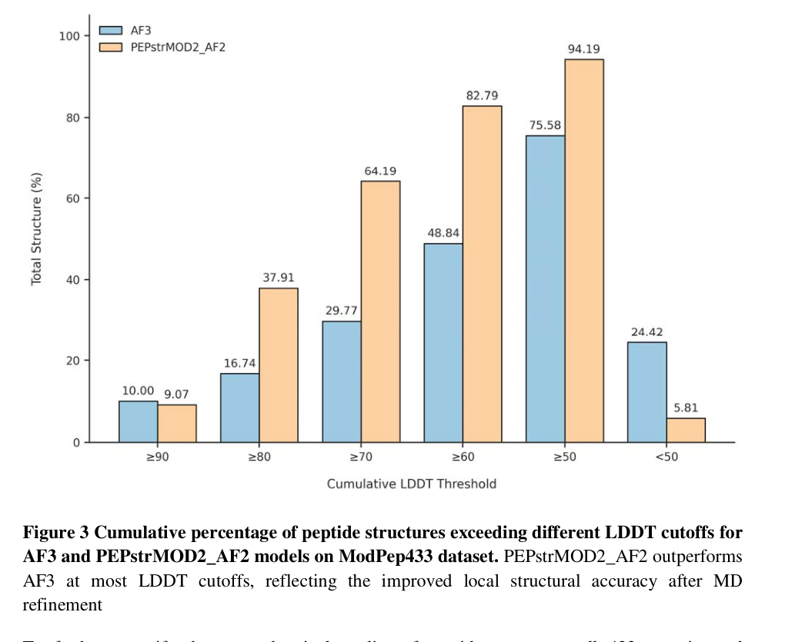
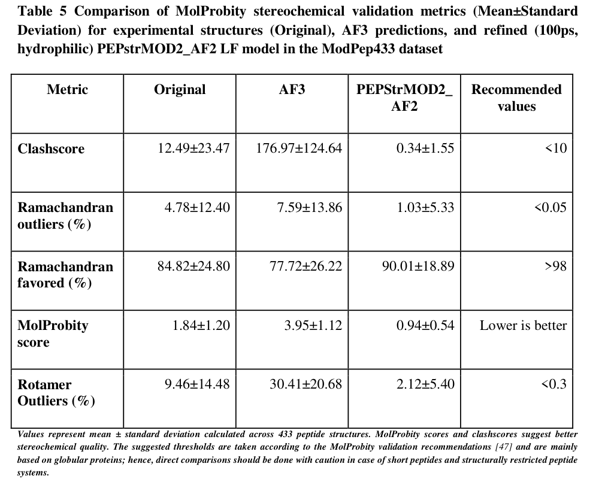

当肽药物越来越依赖非天然氨基酸、PTM 和环化设计，结构预测工具也必须升级了。
肽类药物正在成为药物研发里越来越重要的一类分子。
相比传统小分子，肽通常具有更强的靶向性、更好的生物活性，也更容易通过序列设计进行功能优化。但肽分子也有天然短板：容易被蛋白酶降解、体内半衰期短、构象柔性高、成药性常常不稳定。
因此，在现代肽药物设计中，研究人员经常会引入各种化学修饰，比如非天然氨基酸、翻译后修饰、D-氨基酸、N 端或 C 端修饰、二硫键环化、头尾环化等。这些修饰可以提高稳定性、增强亲和力、改善药代性质，但也带来了一个很现实的问题：
结构更难预测了。
传统结构预测工具大多默认蛋白或肽由 20 种天然氨基酸组成。AlphaFold2、ESMFold 这类深度学习模型在蛋白结构预测中表现出色，但面对大量化学修饰肽时，仍然存在覆盖不足、局部几何不合理、修饰残基参数缺失等问题。AlphaFold3 已经开始支持部分修饰，但其支持范围仍是预定义的，不能覆盖现代肽化学中层出不穷的非常规结构。
这篇 bioRxiv 预印本介绍的 PEPstrMOD2，就是面向这一痛点开发的新一代化学修饰肽三维结构预测平台。

PEPstrMOD2 是 2015 年 PEPstrMOD 的升级版。旧版 PEPstrMOD 曾经是较早支持化学修饰肽结构预测的工具，但它有几个明显限制。
第一，旧版主要适用于 7-25 个残基 的肽，面对更长的治疗肽、小蛋白或复杂修饰体系时扩展性不足。
第二，旧版支持的化学修饰类型有限，大约包括 147 个非天然氨基酸和 32 个 PTM，已经难以覆盖今天肽药物研发中的化学多样性。
第三，旧版初始结构生成依赖较早的二级结构和 beta-turn 预测策略，不具备 AlphaFold 系列模型那种从序列直接生成高质量初始构象的能力。
PEPstrMOD2 的思路很直接：
用深度学习模型生成初始骨架，用 AMBER 兼容修饰库接入化学修饰，再用分子力学和短分子动力学进行结构精修。
也就是说，它不是单纯再训练一个大模型，而是把深度学习结构预测和物理化学精修流程组合起来。

PEPstrMOD2 的输入采用 MAP format。这个格式可以在肽序列中直接标注不同类型的化学修饰，例如 PTM、非天然氨基酸、D-氨基酸、末端修饰以及环化约束。
整个预测流程大致分为五步。
第一步，系统读取带修饰信息的 MAP 序列，并把修饰相关元数据保存下来，同时提取对应的“天然氨基酸主序列”。
第二步，使用 AlphaFold2 或 ESMFold 对主序列生成初始三维结构。这里的深度学习模型主要负责提供较合理的骨架构象。
第三步，把 MAP 中标注的化学修饰重新整合进结构中。这个过程依赖 AMBER 的 tLEaP 模块以及 PEPstrMOD2 自建的修饰残基力场库。
第四步，对引入修饰后的结构进行能量最小化，去除明显空间冲突，优化局部键长、键角和非键相互作用。
第五步，进行短时间分子动力学模拟，让结构在物理环境中进一步弛豫，最终输出预测的肽三级结构。
这里比较关键的是，PEPstrMOD2 不是只给出一个“看起来像”的结构，而是尽量让修饰残基的局部几何也符合分子力场的约束。这对化学修饰肽尤其重要，因为修饰残基的原子类型、部分电荷、连接方式和空间位阻，都会影响最终构象。
PEPstrMOD2 的一个重要贡献，是构建了大规模 AMBER 兼容化学修饰库。
作者从 PDB Chemical Component Dictionary 中筛选 L-peptide residue 相关条目，最初获得 1044 个候选残基。这些残基被分成几类：非天然氨基酸、翻译后修饰、N 端修饰和 C 端修饰。
随后，作者用 AMBERTOOLS25 建立自动参数化流程。内部残基使用 ACE 和 NME 进行封端，以模拟肽链环境；末端修饰则只对另一端封端。之后通过 Antechamber 分配原子类型并用 AM1-BCC 计算部分电荷，再通过 prepgen 生成 PREPIN 文件，通过 parmchk2 补充缺失参数，最后整合进 AMBER ff14SB 力场并用 tLEaP 验证。
最终，PEPstrMOD2 得到了 928 个成功参数化残基，包括：
这使得 PEPstrMOD2 的化学覆盖范围明显超过旧版 PEPstrMOD，也比许多通用结构预测工具更适合处理修饰肽。
在结构精修阶段，PEPstrMOD2 使用 AMBER24。能量最小化包括 2000 步：1000 步 steepest descent，加上 1000 步 conjugate gradient。非键相互作用截断半径为 10 Å。
随后系统可进行短 MD 模拟。水环境中使用 TIP3P 水模型，疏水环境中使用 methane box，也可以在真空环境下模拟。典型流程包括 300 K 下 NVT 加热 50 ps，随后在 1 bar 下 NPT 平衡 50 ps，之后进行生产模拟；时间步长为 1 fs。用户可以选择 ps 或 ns 级别的模拟时间。
这个设计很有意思。深度学习模型负责给出一个不错的初始结构，但它未必保证每个修饰残基都拥有合理的局部化学几何。AMBER 精修则承担“化学清理”和“构象放松”的角色。
所以在某些数据集中，我们会看到一个表面上反直觉的现象：
MD 之后 RMSD 可能略微升高，但结构的立体化学质量显著改善。
这恰恰说明，RMSD 不是唯一指标。对于修饰肽来说，一个模型是否存在严重原子碰撞、错误二面角、异常 rotamer，也同样重要。
作者使用了三个数据集：
在 AfCyc 环肽数据集上，AlphaFold3 表现最好，平均 all-atom RMSD 为 1.13 Å。AfCycDesign 为 1.82 Å。PEPstrMOD2_AF2 在 100 ps 亲水环境模拟后的平均 all-atom RMSD 为 2.05 Å，backbone RMSD 为 1.50 Å，C-alpha RMSD 为 1.51 Å。
这说明 PEPstrMOD2 在环肽预测上虽然不如 AF3，但已经具有竞争力。更重要的是，它可以通过分子力学精修维持合理二硫键几何，二硫键 S-S 距离大多保持在约 1.9-2.1 Å。
在 ModPep433 上，PEPstrMOD2 的优势更加明显。AF3 的平均 RMSD 为 4.67 Å，PEPstrMOD2 经过 100 ps 亲水环境 MD 后为 4.49 Å。差距不算巨大，但考虑到这是化学修饰肽集合，PEPstrMOD2 的修饰库和物理精修开始体现价值。
更细看局部结构，PEPstrMOD2 的优势更清楚。

在 LDDT 指标上，PEPstrMOD2_AF2 在多个阈值下优于 AF3。例如 LDDT 大于等于 70 的结构比例，PEPstrMOD2 为 64.19%，AF3 为 29.77%；LDDT 大于等于 50 的比例，PEPstrMOD2 为 94.19%，AF3 为 75.58%。低质量结构，即 LDDT 小于 50 的比例，PEPstrMOD2 只有 5.81%，AF3 为 24.42%。
这说明 PEPstrMOD2 不只是全局 RMSD 略有优势，在局部残基环境的一致性上也更稳定。
最能体现物理精修价值的是 MolProbity 结果。

在 ModPep433 上，AF3 预测结构的 clashscore 高达 176.97 ± 124.64，而 PEPstrMOD2_AF2 精修后降到 0.34 ± 1.55。MolProbity score 也从 AF3 的 3.95 ± 1.12 改善到 0.94 ± 0.54。
Ramachandran outliers 从 7.59% 降到 1.03%，rotamer outliers 从 30.41% 降到 2.12%。
这组数据非常关键。它说明 AF3 这类模型可能在全局折叠上给出合理构象，但对于短肽、柔性肽和化学修饰残基，局部几何仍可能存在较多空间冲突。PEPstrMOD2 的 AMBER 精修流程可以显著改善这些问题。
ModPep16 是一个更小但更适合精细分析的数据集，其中肽含有较高比例规则二级结构。AF3 因为无法处理其中多数化学修饰，只能成功处理 2 条序列，因此作者没有把 AF3 纳入系统比较。
在这个数据集上，PEPstrMOD2_AF2 在 1000 ps 亲水环境模拟后的平均 all-atom RMSD 为 2.50 Å，明显优于旧版 PEPstrMOD 的约 5.6 Å。如果去掉 4 个高度依赖结合环境或特殊稳定因素的离群结构，PEPstrMOD2_AF2 的 all-atom RMSD 进一步改善到 1.68 Å。
这也提醒我们一个很重要的结构生物学问题：
有些肽在实验结构中并不是孤立存在的，而是依赖配体、蛋白界面、离子或特定溶剂环境稳定。如果把它们单独拿出来模拟，RMSD 变大并不一定说明算法失败，也可能是实验构象本身依赖上下文。
这篇文章最值得注意的地方，不是声称 PEPstrMOD2 全面超过 AF3。事实上，在 AfCyc 环肽数据集上，AF3 仍然是最强的。
PEPstrMOD2 的真正价值在于三个方面。
第一，它覆盖的化学修饰更广。928 个 AMBER 兼容修饰残基，对修饰肽建模非常实用。
第二，它把深度学习初始结构和物理精修接起来，不只看全局构象，也关注局部化学合理性。
第三，它提供网页服务器、命令行版本和 Docker 支持，更适合批量建模和可复现工作流。
因此，PEPstrMOD2 更像是一个面向肽药物和结构生物信息学的工程化平台。对于需要大规模预测化学修饰肽、筛选构象、为后续 docking 或分子动力学模拟准备初始结构的研究者，它会比单纯调用通用结构预测模型更顺手。
当然，它也有局限。
PEPstrMOD2 依赖预定义修饰库。如果某个修饰不在当前 928 个参数化残基中，就不能直接建模。它的最终预测质量也仍然受到 AlphaFold2 或 ESMFold 初始结构质量的影响。对于高度依赖复合物环境、配体稳定或膜环境的肽，孤立肽预测也可能无法还原真实构象。
PEPstrMOD2 的核心思路可以概括为一句话：
用 AlphaFold2/ESMFold 提供骨架，用 AMBER 修饰库补上化学细节，再用分子动力学把结构修得更合理。
在天然蛋白结构预测已经被深度学习显著推进之后，化学修饰肽仍然是一个很现实、也很复杂的应用场景。PEPstrMOD2 不是简单追求更大的模型，而是把模型预测、力场参数、修饰残基库和自动化流程整合起来，面向药物研发中真实存在的“非标准分子”。
对于肽药物设计来说，这类工具的意义在于：
它让研究人员可以更系统地处理那些带有非天然氨基酸、PTM、末端修饰和环化结构的肽分子，从而更快获得可用于机制分析、结构优化和后续模拟的三维模型。